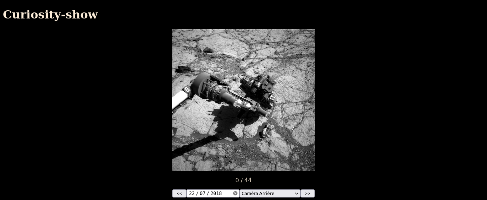

Projet Rover Curiosity Nasa
L'objectif est de créer une page web permettant d'afficher les photos prises par le rover Curiosity de la planète Mars, en choisissant la date de prise de vue et la caméra à partir d'un formulaire, et avec des boutons permettant de naviguer d'une photo à l'autre.
L'API de la NASA
Notion d'API
*D'après wikipedia
Une API (application programming interface ou « interface de programmation d'application ») est un ensemble normalisé de classes, de méthodes, de fonctions et de constantes qui sert de façade par laquelle un logiciel offre des services à d'autres logiciels.
Elle est offerte par une bibliothèque logicielle ou un service web, le plus souvent accompagnée d'une description qui spécifie comment des programmes « consommateurs » peuvent se servir des fonctionnalités du programme « fournisseur ».
La NASA offre des API libres d'accès (avec une clé personnelle) permettant de parcourir des données collectées par des satellites, des téléscopes, des robots, etc...
Nous nous interesserons à l'API Mars Rover Photos. Cette API permet de consulter les photos prises par les différents Rovers sur Mars, à différentes dates. Par exemple, en utilisant l'url suivante :
on récupère des données au format JSON donnant toutes les informations sur les images prises par la caméra avant (FHAZ) du rover Curiosity le 3 juin 2016.
{
"photos": [
{
"id": 102685,
"sol": 1004,
"camera": {
"id": 20,
"name": "FHAZ",
"rover_id": 5,
"full_name": "Front Hazard Avoidance Camera"
},
"img_src": "http://mars.jpl.nasa.gov/msl-raw-images/proj/msl/redops/ods/surface/sol/01004/opgs/edr/fcam/FLB_486615455EDR_F0481570FHAZ00323M_.JPG",
"earth_date": "2015-06-03",
"rover": {
"id": 5,
"name": "Curiosity",
"landing_date": "2012-08-06",
"launch_date": "2011-11-26",
"status": "active"
}
},
{
"id": 102686,
"sol": 1004,
"camera": {
"id": 20,
"name": "FHAZ",
"rover_id": 5,
"full_name": "Front Hazard Avoidance Camera"
},
"img_src": "http://mars.jpl.nasa.gov/msl-raw-images/proj/msl/redops/ods/surface/sol/01004/opgs/edr/fcam/FRB_486615455EDR_F0481570FHAZ00323M_.JPG",
"earth_date": "2015-06-03",
"rover": {
"id": 5,
"name": "Curiosity",
"landing_date": "2012-08-06",
"launch_date": "2011-11-26",
"status": "active"
}
}
]
}
Le format JSON et les types de données
Format JSON
JSON (JavaScript Object Notation – Notation Objet issue de JavaScript) est un format léger d'échange de données. Il est facile à lire ou à écrire pour des humains. Il est aisément analysable ou générable par des machines, et il utilise des notations familières aux langages descendant du langage C, comme C, C++, java, Javascript, Python...
JSON se base sur deux structures:
- Une liste de valeurs ordonnées, qui correspond au type
listde Python, donc encadré par des crochets[et]. Les valeurs sont accessibles par leur indice ; - Une collection de couples nom/valeur, qui correspond au type
dict(dictionnaire) de Python, c'est-à-dire encadré par des accolades{et}. Les valeurs sont accessibles par leur clé.
Aperçu rapide des dictionnaires de Python / Collections en Javascript
Le but ici n'est pas de détaillé le fonctionnement des dictionnaires/collections, chose que nous ferons plus tard dans un chapitre dédié, mais de vous donner un aperçu de l'utilisation de ces dictionnaires. Considérons le code suivant
-
Pour le dictionnaire
perso1, l'appel à la clé"nom"renverra la chaîne de caractère"Dark Vador":>>> perso1["nom"] "Dark Vador" -
Pour le dictionnaire
perso2, l'appel à la clé"Sabre"renverra la chaîne de caractère"Vert":>>> perso2["Sabre"] "Vert" -
Pour le dictionnaire
perso1, l'appel à la clé"enfants"renverra la liste['Luke Skywalker', 'Leia Organa']:Il sera alors possible d'atteindre la chaîne>>> perso1["enfants"] ['Luke Skywalker', 'Leia Organa']'Leia Organa'en utilisant l'indice de celle-ci dans la liste :>>> perso1["enfants"][1] 'Leia Organa'
Analyse des données reçues par une requête
La requête https://api.nasa.gov/mars-photos/api/v1/rovers/curiosity/photos?earth_date=2015-6-3&camera=FHAZ&api_key=DEMO_KEY renvoie les données JSON suivantes :
{
"photos": [
{
"id": 102685,
"sol": 1004,
"camera": {
"id": 20,
"name": "FHAZ",
"rover_id": 5,
"full_name": "Front Hazard Avoidance Camera"
},
"img_src": "http://mars.jpl.nasa.gov/msl-raw-images/proj/msl/redops/ods/surface/sol/01004/opgs/edr/fcam/FLB_486615455EDR_F0481570FHAZ00323M_.JPG",
"earth_date": "2015-06-03",
"rover": {
"id": 5,
"name": "Curiosity",
"landing_date": "2012-08-06",
"launch_date": "2011-11-26",
"status": "active"
}
},
{
"id": 102686,
"sol": 1004,
"camera": {
"id": 20,
"name": "FHAZ",
"rover_id": 5,
"full_name": "Front Hazard Avoidance Camera"
},
"img_src": "http://mars.jpl.nasa.gov/msl-raw-images/proj/msl/redops/ods/surface/sol/01004/opgs/edr/fcam/FRB_486615455EDR_F0481570FHAZ00323M_.JPG",
"earth_date": "2015-06-03",
"rover": {
"id": 5,
"name": "Curiosity",
"landing_date": "2012-08-06",
"launch_date": "2011-11-26",
"status": "active"
}
}
]
}
- Le résultat est un dictionnaire, ayant une unique clé
"Photos", auquel la valeur associée est de type liste. - La liste contient deux éléments de type dictionnaire.
- Les deux dictionnaires possèdent les mêmes clés
"id": l'identifiant de la photo, un entier ;"sol": le nombre de jour depuis l'aterrissage du rover à la date donnée ;"camera": un dictionnaire contenant les informations sur la caméra utilisée pour prendre la photo"img_src": l'URL de la photo ;"earth_date": la date terrienne à laquelle a été prise la photo ;"rover": un dictionnaire contenant les informations sur le rover qui a pris cette photo.
Applications
Applications en Python
Exercice
-
En utilisant la clé
APIque je vous fournirais en classe, copiez-collez le code suivant dans un nouveau fichier de Thonny :nasa_key= ... # importation du module webbrowser import webbrowser # importation du sous-module MarsRovers du module nasaapi from nasaapi import MarsRovers # initialisation de la connexion avec l’API et création de l’objet rovers rovers = MarsRovers(nasa_key, 50 , "NAVCAM") # récupération des données de Curiosity (dictionnaire) cur = rovers.curiosity() # accès à l’URL de la quatrième photo url= cur['photos'][3]['img_src'] # envoi de l’URL dans le navigateur webbrowser.open_new_tab(url) -
Installez les modules
webbrowser,python-nasa-apietrequestsdans Thonny, en utilisant le menuOutils > Gérer les paquets. - Exécutez le code. Que se passe-t-il ?
- Modifiez le code pour recevoir la première photo prise par la caméra
FHAZ(Front Hazard Avoidance Camera). - Combien de photos ont été prises par la caméra panoramique le 30ème jour par Opportunity ? Les afficher toutes !
- Combien de photos ont été prises par toutes les caméras de Curiosity le 100ème jour ? Les afficher toutes !
Application en HTML
Le projet individuel
L'objectif est de constuire un ensemble de pages web permettant de sélectionner un rover, une caméra et une date ou un sol afin d'obtenir un carroussel des photos correspondantes, comme par exemple sur la capture d'écran suivante :

Afin de simplifier votre travail de récupération des données, un fichier javascript nasa_js.js vous est fourni, comprenant :
- une constante
MY_NASA_KEYdevant contenir la clé de connexion à la NASA ; - une variable
imgArrayservant à contenir les résultats de réquêtes sur l'API de la NASA ; - un objet de
request_parametersde typeMap(dictionnaire/collection), servant à contenir les paramètres de la requête ; - une fonction
request_to_nasaqui, une fois appelée avec les bons paramètres, peuple la variableimgArraydes résultats de la requête.
Le projet est individuel, et doit contenir :
- une ou pluseiurs fichiers
HTML; - un ou plusieurs fichiers
CSS(mais un seul suffit) ; - le fichier
nasa_js.jscomplété avec vos propres fonctions si nécessaires ;
Le barême est le suivant :
- 10 points pour un site fonctionnel, plus particulièrement :
- 5 points pour une(des) page(s) contenant un formulaire de sélection des options ;
- 5 points pour une méthode de visualisation des photos obtenues ;
- 4 points pour l'esthétique du site (fichier
CSScohérent et ergonomie du site ) ; - 3 points pour un code sans erreur HTML/CSS (vérifier sur W3C);
- 3 points bonus, selon les améliorations que vous apporterez !